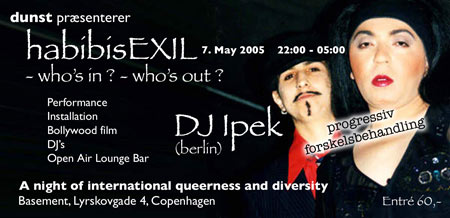
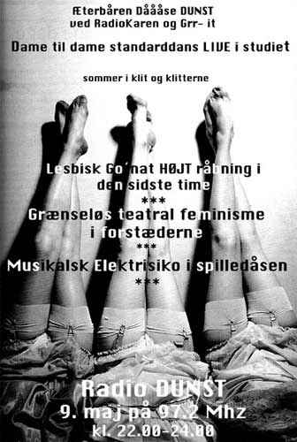

| dunst |
Nyhedsbrev
|
| København - 5. Maj 2005 |
| dunst fest - habibisExil |
7. Maj - 2005 |
 |
| Læs
mere |
| radio dunst |
9. Maj 2005 |
 |
radio værtinder: RadioKaren & Grr-it.
Du finder radio dunst på 92,9 FM og 88,9 kabel.
Hver anden mandag i ulige uger.
kl. 22:00 - 24:00
Eller se i dunst kalenderen
hvornår vi sender. |
| Vitighed |
| Ved du hvad en øko-dildo er..?
Det er en udhulet agurk, med fem vilde bier inden i!!
Thi hi. En Forårs hilsen fra Tove Hansen.
|
Hvis du vil leve et kedeligt liv uden dunst så afmeld dunst Nyhedsbrev
på forsiden af www.dunst.dk |